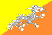

{kind=link}


![[Country map of Bhutan]](../maps/bt-map.jpg)
| Bhutan |  |
|
| | |
| Introduction |
Background: Under British influence a monarchy was set up in 1907; three years later a treaty was signed whereby the country became a British protectorate. Independence was attained in 1949, with India subsequently guiding foreign relations and supplying aid.
| Geography |
Location: Southern Asia, between China and India
Geographic coordinates: 27 30 N, 90 30 E
Map references: Asia
Area:
total:
47,000 sq km
land:
47,000 sq km
water:
0 sq km
Area - comparative: about half the size of Indiana
Land boundaries:
total:
1,075 km
border countries:
China 470 km, India 605 km
Coastline: 0 km (landlocked)
Maritime claims: none (landlocked)
Climate: varies; tropical in southern plains; cool winters and hot summers in central valleys; severe winters and cool summers in Himalayas
Terrain: mostly mountainous with some fertile valleys and savanna
Elevation extremes:
lowest point:
Drangme Chhu 97 m
highest point:
Kula Kangri 7,553 m
Natural resources: timber, hydropower, gypsum, calcium carbide
Land use:
arable land:
2%
permanent crops:
0%
permanent pastures:
6%
forests and woodland:
66%
other:
26% (1993 est.)
Irrigated land: 340 sq km (1993 est.)
Natural hazards: violent storms coming down from the Himalayas are the source of the country's name which translates as Land of the Thunder Dragon; frequent landslides during the rainy season
Environment - current issues: soil erosion; limited access to potable water
Environment - international agreements:
party to:
Biodiversity, Climate Change, Nuclear Test Ban
signed, but not ratified:
Law of the Sea
Geography - note: landlocked; strategic location between China and India; controls several key Himalayan mountain passes
| People |
Population:
2,005,222
note:
other estimates range as low as 800,000 (July 2000 est.)
Age structure:
0-14 years:
40% (male 417,627; female 387,927)
15-64 years:
56% (male 576,533; female 544,076)
65 years and over:
4% (male 40,081; female 38,978) (2000 est.)
Population growth rate: 2.19% (2000 est.)
Birth rate: 36.22 births/1,000 population (2000 est.)
Death rate: 14.32 deaths/1,000 population (2000 est.)
Net migration rate: 0 migrant(s)/1,000 population (2000 est.)
Sex ratio:
at birth:
1.05 male(s)/female
under 15 years:
1.08 male(s)/female
15-64 years:
1.06 male(s)/female
65 years and over:
1.03 male(s)/female
total population:
1.07 male(s)/female (2000 est.)
Infant mortality rate: 110.99 deaths/1,000 live births (2000 est.)
Life expectancy at birth:
total population:
52.4 years
male:
52.79 years
female:
51.99 years (2000 est.)
Total fertility rate: 5.13 children born/woman (2000 est.)
Nationality:
noun:
Bhutanese (singular and plural)
adjective:
Bhutanese
Ethnic groups: Bhote 50%, ethnic Nepalese 35%, indigenous or migrant tribes 15%
Religions: Lamaistic Buddhist 75%, Indian- and Nepalese-influenced Hinduism 25%
Languages: Dzongkha (official), Bhotes speak various Tibetan dialects, Nepalese speak various Nepalese dialects
Literacy:
definition:
age 15 and over can read and write
total population:
42.2%
male:
56.2%
female:
28.1% (1995 est.)
People - note: refugee issue over the presence in Nepal of approximately 96,500 Bhutanese refugees, 90% of whom are in seven United Nations Office of the High Commissioner for Refugees (UNHCR) camps
| Government |
Country name:
conventional long form:
Kingdom of Bhutan
conventional short form:
Bhutan
Data code: BT
Government type: monarchy; special treaty relationship with India
Capital: Thimphu
Administrative divisions: 18 districts (dzongkhag, singular and plural); Bumthang, Chhukha, Chirang, Daga, Geylegphug, Ha, Lhuntshi, Mongar, Paro, Pemagatsel, Punakha, Samchi, Samdrup Jongkhar, Shemgang, Tashigang, Thimphu, Tongsa, Wangdi Phodrang
Independence: 8 August 1949 (from India)
National holiday: National Day, 17 December (1907) (Ugyen WANGCHUCK became first hereditary king)
Constitution:
no written constitution or bill of rights
note:
Bhutan uses 1953 Royal decree for the Constitution of the National Assembly; on 7 July 1998, a Royal edict was ratified giving the National Assembly additional powers
Legal system: based on Indian law and English common law; has not accepted compulsory ICJ jurisdiction
Suffrage: each family has one vote in village-level elections
Executive branch:
chief of state:
King Jigme Singye WANGCHUCK (since 24 July 1972)
head of government:
Foreign Minister Jigme Yoeser THINLEY (since NA June 1998)
cabinet:
Council of Ministers (Lhengye Shungtsog) nominated by the monarch, approved by the National Assembly; members serve fixed, five-year terms
note:
there is also a Royal Advisory Council (Lodoi Tsokde), members nominated by the monarch
elections:
none; the monarch is hereditary, but democratic reforms in July 1998 give the National Assembly authority to remove the monarch with two-thirds vote
Legislative branch:
unicameral National Assembly or Tshogdu (150 seats; 105 elected from village constituencies, 10 represent religious bodies, and 35 are designated by the monarch to represent government and other secular interests; members serve three-year terms)
elections:
last held NA (next to be held NA)
election results:
NA
Judicial branch: the Supreme Court of Appeal is the monarch; High Court, judges appointed by the monarch
Political parties and leaders: no legal parties
Political pressure groups and leaders: Buddhist clergy; ethnic Nepalese organizations leading militant antigovernment campaign; Indian merchant community; United Front for Democracy (exiled)
International organization participation: AsDB, CP, ESCAP, FAO, G-77, IBRD, ICAO, IDA, IFAD, IMF, Intelsat, IOC, ITU, NAM, OPCW, SAARC, UN, UNCTAD, UNESCO, UNIDO, UPU, WHO, WIPO
Diplomatic representation in the US:
none; note - Bhutan has a Permanent Mission to the UN; address: 2 United Nations Plaza, 27th Floor, New York, NY 10017; telephone [1] (212) 826-1919; the Bhutanese mission to the UN has consular jurisdiction in the US
consulate(s) general:
New York
Diplomatic representation from the US: the US and Bhutan have no formal diplomatic relations, although informal contact is maintained between the Bhutanese and US Embassy in New Delhi (India)
Flag description: divided diagonally from the lower hoist side corner; the upper triangle is yellow and the lower triangle is orange; centered along the dividing line is a large black and white dragon facing away from the hoist side
| Economy |
Economy - overview: The economy, one of the world's smallest and least developed, is based on agriculture and forestry, which provide the main livelihood for 90% of the population and account for about 40% of GDP. Agriculture consists largely of subsistence farming and animal husbandry. Rugged mountains dominate the terrain and make the building of roads and other infrastructure difficult and expensive. The economy is closely aligned with India's through strong trade and monetary links. The industrial sector is technologically backward, with most production of the cottage industry type. Most development projects, such as road construction, rely on Indian migrant labor. Bhutan's hydropower potential and its attraction for tourists are key resources. The Bhutanese Government has made some progress in expanding the nation's productive base and improving social welfare. Model education, social, and environment programs in Bhutan are underway with support from multilateral development organizations. Each economic program takes into account the government's desire to protect the country's environment and cultural traditions. Detailed controls and uncertain policies in areas like industrial licensing, trade, labor, and finance continue to hamper foreign investment.
GDP: purchasing power parity - $2.1 billion (1999 est.)
GDP - real growth rate: 7% (1999 est.)
GDP - per capita: purchasing power parity - $1,060 (1999 est.)
GDP - composition by sector:
agriculture:
38%
industry:
37%
services:
25% (1998)
Population below poverty line: NA%
Household income or consumption by percentage share:
lowest 10%:
NA%
highest 10%:
NA%
Inflation rate (consumer prices): 9% (1998)
Labor force:
NA
note:
massive lack of skilled labor
Labor force - by occupation: agriculture 93%, services 5%, industry and commerce 2%
Unemployment rate: NA%
Budget:
revenues:
$146 million
expenditures:
$152 million, including capital expenditures of $NA (FY95/96 est.)
note:
the government of India finances nearly three-fifths of Bhutan's budget expenditures
Industries: cement, wood products, processed fruits, alcoholic beverages, calcium carbide
Industrial production growth rate: 9.3% (1996 est.)
Electricity - production: 1.788 billion kWh (1998)
Electricity - production by source:
fossil fuel:
0.39%
hydro:
99.61%
nuclear:
0%
other:
0% (1998)
Electricity - consumption: 345 million kWh (1998)
Electricity - exports:
1.339 billion kWh
note:
exports electricity to India (1998)
Electricity - imports: 21 million kWh (1998)
Agriculture - products: rice, corn, root crops, citrus, foodgrains; dairy products, eggs
Exports: $111 million (f.o.b., 1998)
Exports - commodities: cardamom, gypsum, timber, handicrafts, cement, fruit, electricity (to India), precious stones, spices
Exports - partners: India 94%, Bangladesh
Imports: $136 million (c.i.f., 1998)
Imports - commodities: fuel and lubricants, grain, machinery and parts, vehicles, fabrics, rice
Imports - partners: India 77%, Japan, UK, Germany, US
Debt - external: $120 million (1998)
Economic aid - recipient: $73.8 million (1995)
Currency: 1 ngultrum (Nu) = 100 chetrum; note - Indian currency is also legal tender
Exchange rates: ngultrum (Nu) per US$1 - 43.552 (January 2000), 43.055 (1999), 41.259 (1998), 36.313 (1997), 35.433 (1996), 32.427 (1995); note - the Bhutanese ngultrum is at par with the Indian rupee
Fiscal year: 1 July - 30 June
| Communications |
Telephones - main lines in use: 5,000 (1995)
Telephones - mobile cellular: NA
Telephone system:
domestic:
domestic telephone service is very poor with few telephones in use
international:
international telephone and telegraph service is by landline through India; a satellite earth station was planned (1990)
Radio broadcast stations: AM 0, FM 1, shortwave 1 (1998)
Radios: 37,000 (1997)
Television broadcast stations: 0 (1997)
Televisions: 11,000 (1997)
Internet Service Providers (ISPs): NA
| Transportation |
Railways: 0 km
Highways:
total:
3,285 km
paved:
1,994 km
unpaved:
1,291 km (1996 est.)
Ports and harbors: none
Airports: 2 (1999 est.)
Airports - with paved runways:
total:
1
1,524 to 2,437 m:
1 (1999 est.)
Airports - with unpaved runways:
total:
1
914 to 1,523 m:
1 (1999 est.)
| Military |
Military branches: Royal Bhutan Army, Palace Guard, Militia, Royal Police Force
Military manpower - military age: 18 years of age
Military manpower - availability:
males age 15-49:
491,427 (2000 est.)
Military manpower - fit for military service:
males age 15-49:
262,316 (2000 est.)
Military manpower - reaching military age annually:
males:
20,374 (2000 est.)
Military expenditures - dollar figure: $NA
Military expenditures - percent of GDP: NA%
| Transnational Issues |
Disputes - international: over approximately 96,500 Bhutanese refugees in Nepal